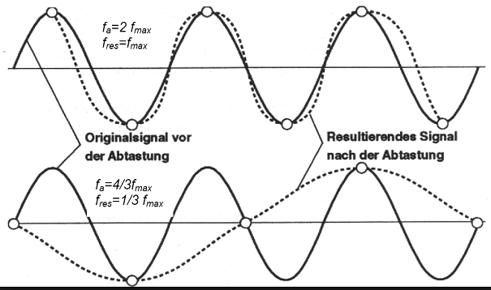
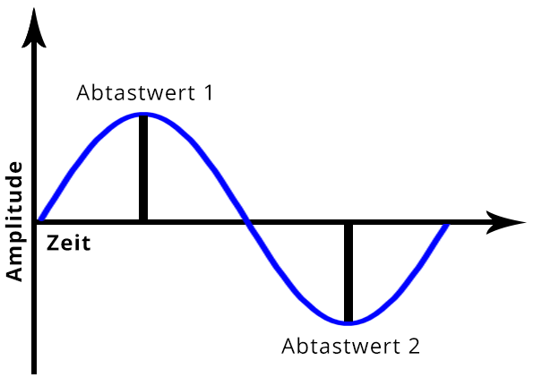

Erzeuge zwei kurze Audio-Files (max. 5 s), davon eines mit Musik deiner Wahl aus dem Internet (wobei sich Musik mit einer relativ hohen Dynamik, d.h. Wechsel zwischen relativ leisen und lauten Abschnitten empfiehlt). Wähle eine geeignete Abtastfrequenz (begründen !) und achte auf gute Aussteuerung. Das zweite Audio-File soll eine Sprachaufnahme (mit dem Headset aufgesprochen) enthalten (Übersteuerung vermeiden !). Wähle hier eine Abtastfrequenz von 22 kHz, 16 bit Auflösung, mono. Die Einstellungen wie Abtastrate, Bitzahl und Kanalzahl können im
vorgenommen werden. Die Eingangsquelle (wahlweise Audio-CD oder Mikrofon) kann im
eingestellt werden.Nun lies die Musik- und die Sprachdatei mit wave_io ein und erkläre die Angaben im Header ! Wie hoch ist die Bitrate für die beiden Dateien?.
Musikaufnahme
Beschreibung
Lösung
Lösung
Beschreibung
Lösung
Modifiziere wave_io dahingehend, dass die Samples in der WAV-Datei in eine (lesbare) ASCII-Datei geschrieben werden. Lies die von mir geschickten Dateien (Sampling-Frequenz: 16 kHz) ein und bestimme aus den resultierenden Zahlenfolgen in der ASCII-Datei die Frequenz der Sinus-Schwingungen (Begründen und jeweils eine Periode für das Protokoll abspeichern). Überprüfe Deine Schätzung mit dem
(Plots ins Protokoll !).
(Vorgehensweise: Menüpunkt Analyze File, Einstellungen: Freq Scale: Linear, FFT Size: 512, Time scale: 1 msec)
Sine_hi05
Sine_lo05
Lösung:
FileWriter fw = new FileWriter("ASCII-sine_05.lo.txt");
BufferedWriter bw = new BufferedWriter(fw);
for (int i=0; i < samples/2 ;i++) {
bw.write(String.valueOf(readWavFile.sound[i]));
bw.newLine();
}
Die Formel "f0 = 1/T0" dient zur Bestimmung der Frequenz einer Schwingung.
Die Frequenz der Schwingung "f0" und die Periodendauer "T0" der abgetastetend Schwingung stehen in Verhältnis zueinander.
f0=1/n*Ta : durch die Multiplikation der Anzahl der Abtastwerte pro Schwingung n und des Abstands zwischen zwei Abtastwerten Ta wird T0 ermittelt.
"Ta=1/fa" --> "f0=1/n*fa" (Ableitung, da fa Abtastfrequenz)
Teilt man die Anzahl der Abtastwerte durch die Anzahl der Schwingungen innerhalb einer Periode erhält man n.
ASCII hi:
16069
-13623
9102
-3196
-3196
9102
-13623
16069
Es sind 7 Schwingungen in 8 Abtastungen zu vermerken.
-----------------------
ASCII lo:
3196
9102
13623
16069
16069
13623
9102
3196
-3196
-9102
-13623
-16069
-16069
-13623
-9102
-3196
3196
Es sind 2Schwingungen auf 17Abtastungen festzustellen(1 auf 8)
Bei der zeitlichen Diskretisierung eines Analogsignals muß das sogenannte Abtasttheorem eingehalten werden. Wie lautet es und wie läßt sich der Grenzfall, für den es gerade noch gilt, illustrieren (Zeichnung !)?
Lösung
Das Abtasttheorem lautet: fa > 2*fma
|  |  |
Bei herkömmlichen Soundkarten tritt systembedingt kein Aliasing auf, weil das Audiosignal stets geeignet vorbehandelt wird. Mit einem kleinen Trick läßt sich Aliasing jedoch nachweisen. Diese auch als Down-Sampling bekannte Methode besteht darin, dass man bei einer WAV-Datei z.B. jeden zweiten Abtastwert wegwirft. Man erhält so eine Wellenform, die genau die Hälfte der ursprünglichen Abtastfrequenz aufweist. Wenn man das Signal nicht vorher bandbegrenzt hat, können Aliasing-Verzerrungen hörbar werden.
Lösung
Durch den Einsatz von Tiefpassfilter wird das Aliasing, bei herkömmlichen Soundkarten, verhindert. Frequenzen, die >= fa / 2, werden herausgefiltert, so wird das Abtasttheorem eingehalten.
Modifiziere wave_io dahingehend, dass vom eingelesenen Signal jeder zweite Abtastwert verworfen wird und das resultierende Signal abgespeichert wird. Der Header muß natürlich entsprechend verändert werden! Wende das resultierende Programm zunächst auf 'sine_lo.wav' und 'sine_hi.wav' an. Welche Frequenzen erscheinen nach dem DownSampling (Spektrogramm und WAVs ins Protokoll !)? Was würde passieren, wenn man geeignet bandbegrenzen würde?
Lösung:
for (int i=0; i < samples/2;i++) {
readWavFile.sound[i] = readWavFile.sound[i*2];
sampleRate = readWavFile.getSampleRate()/2;
numFrames = readWavFile.getNumFrames()/2;
Beim High ist es auf eine Schwingung runter und beim Low ist es gleich geblieben(1 Schwingung)

Diese Problematik entsteht wenn man keine Bandbegrenzung durchführt und somit das Abtasttheorem nicht erfüllt. Bei Low kam es zu keiner veränderung des Tons da bei der Abtastung mit geringer Schwingung eine Reduktion der Abtastpunkte sich wenig auswirkt und somit auch das Abtasttheorem beibehalten wird.
Die herkömmlichen PC-Soundkarten arbeiten meist entweder mit 16 oder 8 bit-Auflösung. Wie groß ist die Anzahl der bei diesen beiden Werten darstellbaren Amplitudenwerten ?
Lösung:
Bei 16 bit Auflösung ist die höchstmögliche Anzahl der darstellbaren Amplitudenwerte 216=65536 und bei 8 bit Auflösung sind es 28=256.Wir wollen nun wave_io so modifizieren, dass wir die Bitzahl reduzieren können. Dazu können wir z.B. alle Samples durch eine Potenz von 2 teilen (Integer-Division ohne Rest). Damit das resultierende Signal nicht leiser wird als das Original, kompensieren wir die Operation durch Multiplikation mit derselben Zweierpotenz. Zu beachten: Der Datentyp hat nach wie vor 16 bit!
(Denselben Effekt erreicht man auch durch einfaches logisches 'Verunden' mit einem entsprechenden HEX-Wert, indem man mit dem LSB beginnend Bits 'ausblendet'.)
Lösung
for (int i=0; i < samples;i++) {
readWavFile.sound[i] /= j;
readWavFile.sound[i] *= j;
}
Mit dem entstandenen Programm verändern wir die in Aufgabe 1 erzeugten Wave-Dateien. Ab welcher Bitzahl tritt bei Musik/Sprache eine hörbare/deutliche Verschlechterung der Qualität ein? Bei wieviel Bit ist das Sprachsignal noch verständlich ? (Waves für all diese Fälle ins Protokoll, Ausschnitte als Plots)
Was charakterisiert das entstehende Quantisierungsgeräusch und macht es besonders störend?
Das Quantisierungsgeräusch hat eine erhöhtes Energieaufkommen und je mehr Energie in den sound mit einfließt desto mehr hört man das rauschen bis irgendwann man nichts mehr hört.
Lösung
Musik:
6bit(verschlächtert)
4Bit (deutlich verschlächtert)
Sprache:
10Bit (verschlächtert)
9Bit (deutlich schlächter)
7Bit (gerade noch so verständlich)
Modifiziere Dein Programm noch einmal so, dass auch das Differenzsignal zwischen Original und bitreduziertem Signal, das heißt, das Quantisierungsrauschen ausgegeben werden kann. Welchen Charakter hat das Rauschen bei einer Reduktion um 1 bit, wie verändert es sich bei zunehmender Bit-Reduktion? (Waves für all diese Fälle ins Protokoll, Ausschnitte als Plots)
Lösung
short new_sound [] = new short[samples*Short.SIZE];
for (int i=0; i < samples;i++) {
new_sound[i] = readWavFile.sound[i];
readWavFile.sound[i] /= j;
readWavFile.sound[i] *= j;
new_sound[i] -= readWavFile.sound[i];
readWavFile.sound[i] *= 2;
}
Bei einer Reduktion um 1 bit ist das Differenzsignal ein intensives Rauschen. Bei zunehmender Bitzahl wird das signal dem Ursprungssignal ähnlicher.